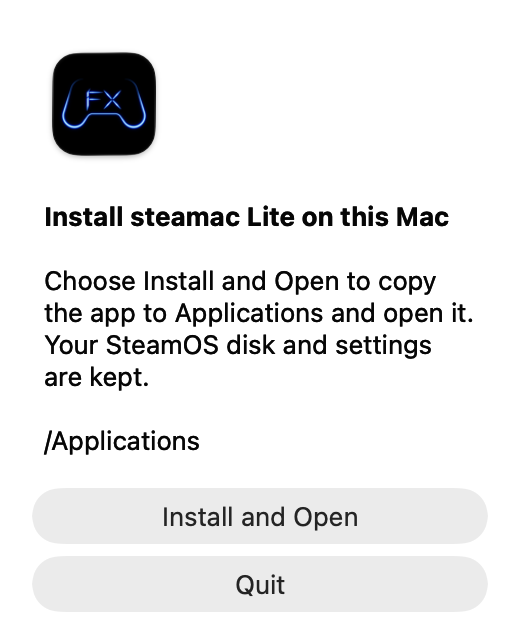

steamac Lite
Update support
How to update the app and check problems after an update.
Update from the app
Lite.9 and later can update from the app. From 1.9.8-lite.2, each launch checks for updates. A window appears only when a newer version is available.
- Open Check for Updates…
Choose it from the steamac Lite menu at the top of the Mac screen. Use the Mac app menu, rather than the Steam menu inside SteamOS.
- Choose Update
When a new version is shown, choose Update. Wait for the download and file verification to finish.
- Choose Install and Relaunch
Save anything you need in the game first. The app waits for SteamOS to shut down, replaces the app, and opens the new version.
The update replaces the Mac app. Your SteamOS disk, installed games, and existing settings are kept. You do not need to create a new disk to update.
Update using a DMG
Use these steps for Lite.8 or earlier, or if the app will not open.
- Quit steamac Lite if it is running
Save anything you need in the game, then quit steamac Lite. If it is shutting down, wait for that to finish.
- Download the latest DMG
Use the button below to download the Mac DMG. Source code on GitHub is for development.
- Choose Install and Open
Open the DMG, then open SteamAC Lite.app inside it. When prompted, choose Install and Open to replace the installed app with the new version.


Enlarge screenshot ↗The BOOTH online installer also downloads the latest app. Select the folder containing your existing app as the destination.
Check microphone access after updating
From Lite.13, a microphone check appears on first launch and the first launch after each update, including when access is already allowed. In 1.9.8-lite.1, choose a microphone in Settings → Sound → Input device. Your choice is saved without changing the Mac’s default input. Settings support scrolling and window resizing.
The app check and the macOS permission dialog are separate. macOS decides whether its permission dialog appears.
If there is still no input
- In System Settings → Sound → Input on the Mac, select your microphone and check whether the input level moves. steamac Lite uses the Mac's default input device.
- In System Settings → Privacy & Security → Microphone, check access for steamac Lite. If it stopped working after an update, try turning this app's permission off and on again, even if it is already on.
- In steamac Lite, open Settings → Sound and choose Check Again. Also check the Steam microphone test and the input device selected in VRChat.
After you dismiss the check, it does not appear again for the same version. You can check access at any time in Settings → Sound.
If an update fails
No update notification
From 1.9.8-lite.2, every app launch checks for updates and shows a notice only when a newer version is available. Make sure automatic checks are enabled in Settings → General. Use steamac Lite → Check for Updates… to check manually, including skipped versions. Lite.8 and earlier need the DMG method.
Download, verification, or replacement fails
Check your connection and free space on the Mac, then try again. If it still fails, quit the running app and use the DMG method. If verification errors continue, include the displayed error when asking for help.
The updated app will not open
Open the latest DMG and use the app installed in Applications. If macOS asks to confirm opening it, check the source and follow the on-screen instructions. If it still will not open, send the details listed below.
If you still need help
Send the details below, as far as you know them, through GitHub Issues or BOOTH.
- Mac model, memory, and macOS version
- App versions before and after updating
- Whether you used in-app update, a GitHub DMG, or BOOTH
- Where it stops, any error text, and a screenshot if possible
- For microphone problems: built-in, USB, Bluetooth, etc., and whether the Mac input meter moves